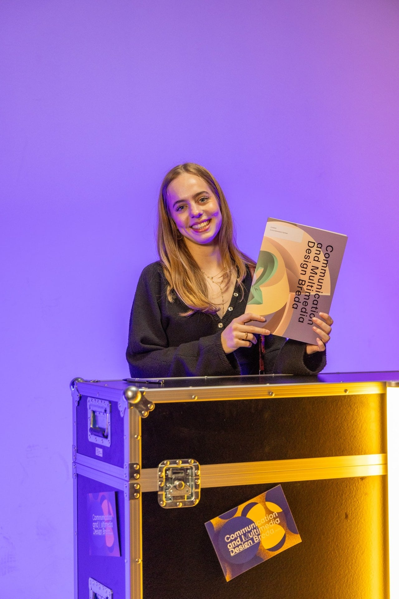

Over mij
Ik vind het vooral interessant hoe je met beeld een verhaal kunt vertellen en iemand nieuwsgierig kunt maken. Ik haal veel inspiratie uit films, muziek, boeken en de natuur. Tijdens het ontwerpen vind ik het fijn om eerst een idee of verhaal te hebben en dit daarna steeds verder uit te werken. Uiteindelijk wil ik graag ontdekken hoe ik mijn liefde voor film, graphic design en storytelling kan combineren met design.
Contact
Interesse in een samenwerking of heb je een vraag? Stuur gerust een bericht.